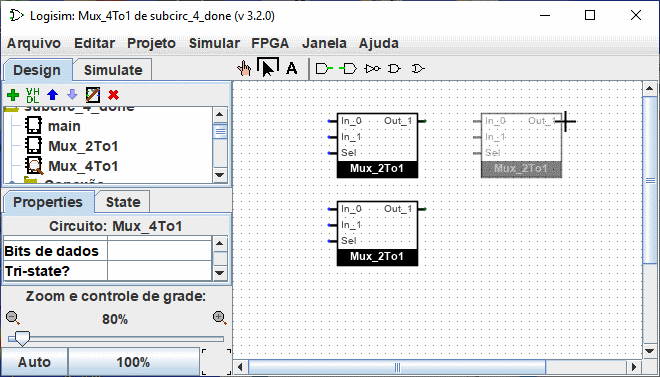
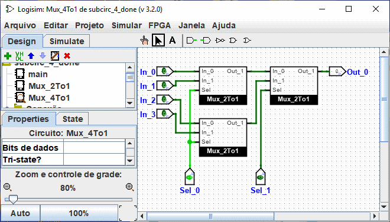
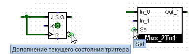

Использование подсхем
Предположим, перед нами стоит задача спроектировать мультиплексор 4-в-1, используя уже готовые экземпляры нашего мультиплексора 2-в-1. Для этого сначала создадим новую пустую схему верхнего уровня и назовём её Mux_4To1.
Чтобы добавить элементы 2-в-1 на новый чертёж, щёлкните один раз левой кнопкой мыши по названию схемы Mux_2To1 в панели «Навигатор». Это действие сделает её активным инструментом. Теперь вы можете размещать экземпляры (копии) этой подсхемы на холсте, просто щёлкая мышью в нужных местах. На чертеже они будут представлены в виде условных графических обозначений (УГО) — прямоугольных блоков.

Примечание: Если вы дважды щёлкните по названию Mux_2To1 в Навигаторе, программа вместо выбора инструмента переключит рабочую область на редактирование внутреннего чертежа этой схемы.
После размещения всех компонентов и прокладки проводников итоговая схема будет выглядеть следующим образом:

Наш мультиплексор 4-в-1 использует три независимых экземпляра мультиплексора 2-в-1. Контакты на границах прямоугольных блоков строго соответствуют портам ввода-вывода (Pin), которые мы разместили внутри схемы Mux_2To1.
По умолчанию контакты на левой стороне прямоугольника соответствуют входам схемы, а на правой стороне — выходам. Порядок их расположения на графическом корпусе (сверху вниз) определяется порядком их физического размещения на внутреннем чертеже подсхемы (при сканировании холста слева направо и сверху вниз).
Всплывающие подсказки (Метки портов)
Если внутренним контактам (Pin) на чертеже подсхемы были заданы аппаратные метки (свойство Метка), Logisim-evolution автоматически отобразит их во всплывающей подсказке при наведении курсора мыши на соответствующий контакт размещённого блока. Если вы находите эти подсказки излишними, их отображение можно отключить на вкладке «Чертёж» в окне настроек программы.

Подобные подсказки поддерживаются и многими стандартными компонентами. Например, при наведении курсора на контакты библиотечных триггеров система пояснит назначение каждого конкретного контакта (Clock, Data, Enable и т.д.).
Особенности моделирования иерархии
Logisim-evolution независимо отслеживает внутреннее состояние каждого размещённого экземпляра подсхемы. Например, если ваша подсхема содержит D-триггер, и вы используете её трижды на главном холсте, то каждый из трёх триггеров будет хранить своё собственное, независимое логическое значение в процессе моделирования проекта.
Logisim-evolution не имеет жёстких ограничений на глубину вложенности иерархии — вы можете использовать Mux_4To1 внутри мультиплексора 16-в-1 и так далее. Единственное строгое ограничение: система блокирует рекурсию (нельзя поместить схему саму в себя).
Важное предупреждение о редактировании:Нет ничего плохого в том, чтобы дорабатывать схему, которая уже используется в проекте в качестве подсхемы — это стандартный процесс проектирования. Однако помните: любые изменения портов ввода-вывода внутри схемы (добавление новых контактов, их удаление или смещение) немедленно приведут к изменению количества или расположения контактов на графическом корпусе во всех родительских схемах, где она размещена. Это может привести к обрыву существующих проводников, поэтому после таких изменений обязательно проверяйте схемы верхнего уровня.
Далее: Изменение внешнего вида подсхемы.